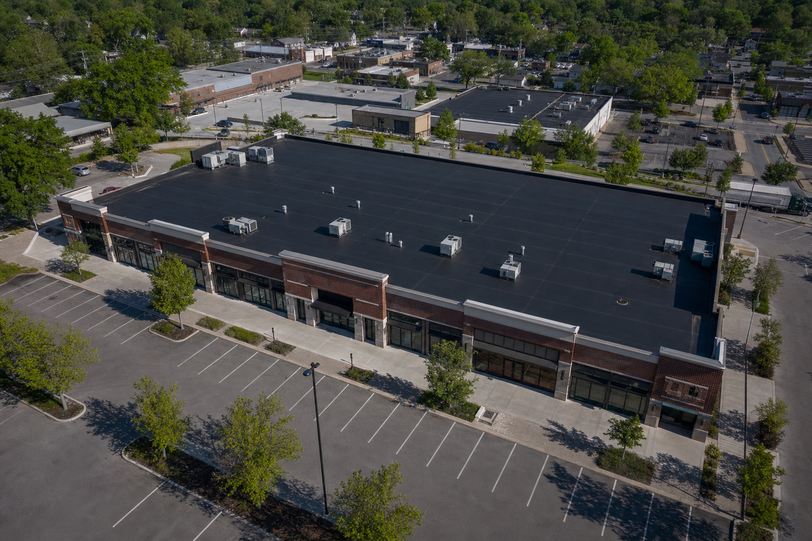

01
A low-slope or flat-roof project is being evaluated
The building requires a clearly defined commercial roofing scope rather than a residential roof approach.

Commercial roofing · St. Louis
Commercial Roofing
A low-slope or flat-roof project begins with the building, the visible roof condition, and the approved roofing scope. The system and work sequence should be defined for that property.
When commercial roofing is appropriate
Commercial roofing decisions should reflect the roof asset, rooftop conditions, and the work the property has approved—not a generic system applied without context.
The building requires a clearly defined commercial roofing scope rather than a residential roof approach.
Equipment, penetrations, edges, transitions, and existing conditions may affect how the work is defined.
The proposal should identify the approved roofing work and the sequence established for the property.
The recommendation should be based on the roof’s visible condition and the commercial project requirements.
Building access, scheduling, occupied-property practices, safety procedures, available systems, and closeout deliverables require operational confirmation.
Why Oxford for commercial roofing
Begin with the visible roof conditions, property context, rooftop equipment, and known project constraints.
Bring the proposed roof assembly, critical details, and approved work into one commercial roofing scope.
Use the written project sequence as the reference point for the commercial installation and review.
What the commercial scope considers
The final scope depends on the documented roof condition and written proposal. A commercial roofing project may require the following categories to be addressed.
Exact systems, coordination practices, and closeout deliverables remain subject to Oxford’s confirmed commercial offering and written proposal.
The commercial process
Review the visible commercial roof condition and property context.
Define the proposed assembly and project sequence for review.
Use the accepted scope as the reference for the commercial roofing work.
Review the completed roof and the project information Oxford confirms as applicable.
Relevant commercial proof
These Oxford portfolio projects verify TPO and EPDM project examples. They do not establish additional commercial systems or maintenance services.


Complete Oxford service territory
Oxford’s approved territory includes the following Missouri and Illinois communities.
Missouri
Missouri
Missouri
Missouri
Missouri
Missouri
Illinois
Illinois
Illinois
Our service area is always growing. If you’re in or near the greater St. Louis region, there’s a good chance Oxford Roofing can help. Contact us and we’ll confirm whether your property is within our current service area.
Commercial roofing FAQ
These answers describe a conservative decision framework. Operational details remain subject to confirmation.
Oxford’s current portfolio identifies TPO membrane at Clayton Office Park and EPDM membrane at Maplewood Retail Center. Additional systems and availability require confirmation.
The proposed scope should reflect documented roof conditions, the building context, the approved assembly, and project-specific details. The written proposal determines the actual work.
Property-specific constraints should be identified while the project sequence is developed. Oxford’s exact occupied-building and scheduling practices require operational confirmation; no downtime guarantee is implied.
Equipment, curbs, penetrations, edges, and transitions may affect the proposed roof details. The written commercial proposal should identify which conditions and details are included.
Oxford’s exact inspection, completion, product, and closeout deliverables require operational confirmation. Final requirements should be stated in the approved project documents.
Begin with the building
Oxford can review the visible roof condition and property context before defining the proposed commercial roofing scope. No particular system or schedule is assumed in advance.
Request an Inspection